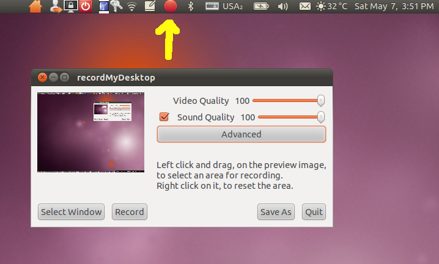

Screen Capture
One fun and easy way to create videos is to simply record what is
happening on your computer screen. This can be especially useful for
doing demonstrations, such as how to use a program.
In Ubuntu, this is very easy to setup. We will start up the program
gtk-RecordMyDesktop (also known as "Desktop Recorder"). When you
bring up the program, you will see a couple quality sliders (leave them
at 100%, if you want to compress things down you can do that later) and
a few buttons.
In addition there will be an indicator (big red record button) for the
program in the system
tray. When you start recording the video, the record button will change
to a stop button, click this when you want to stop.

To start capturing your video, click the "Save As" button to select a
file that you will save to, then hit the "Record" button.
Optionally, you can pick a window and only record what happens there.
In addition to everything on your screen, this will record the audio
coming in from your microphone, so you can explain what you are doing
in the video as you do it.
Here is a video created
using recordMyDesktop.